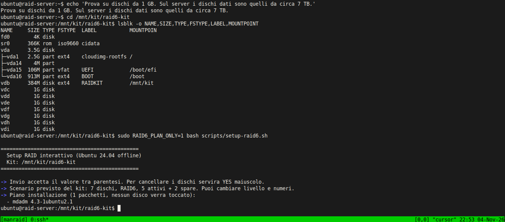
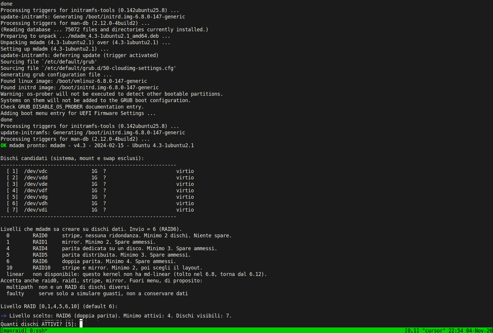
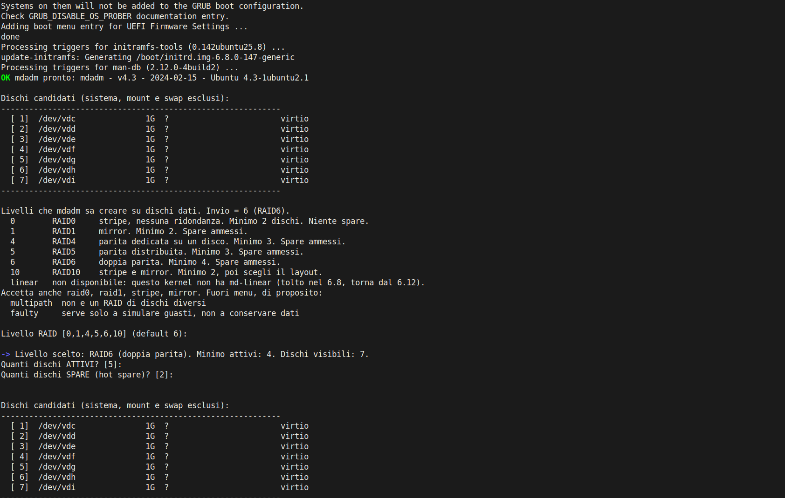
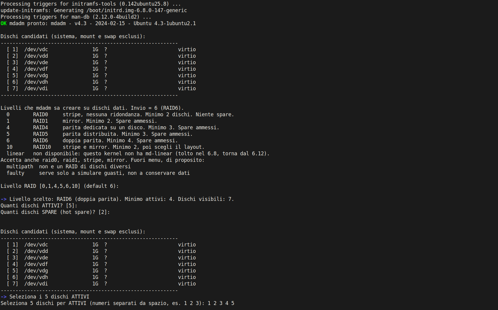
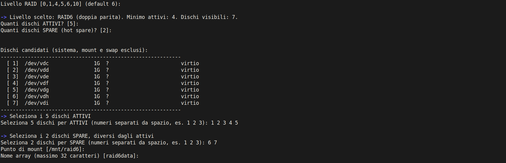
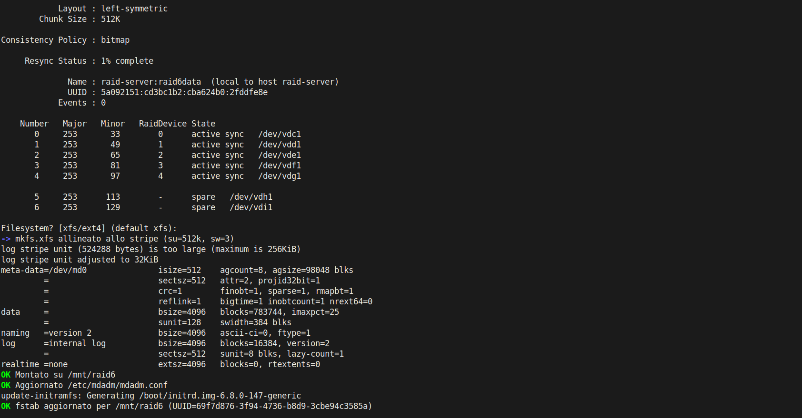
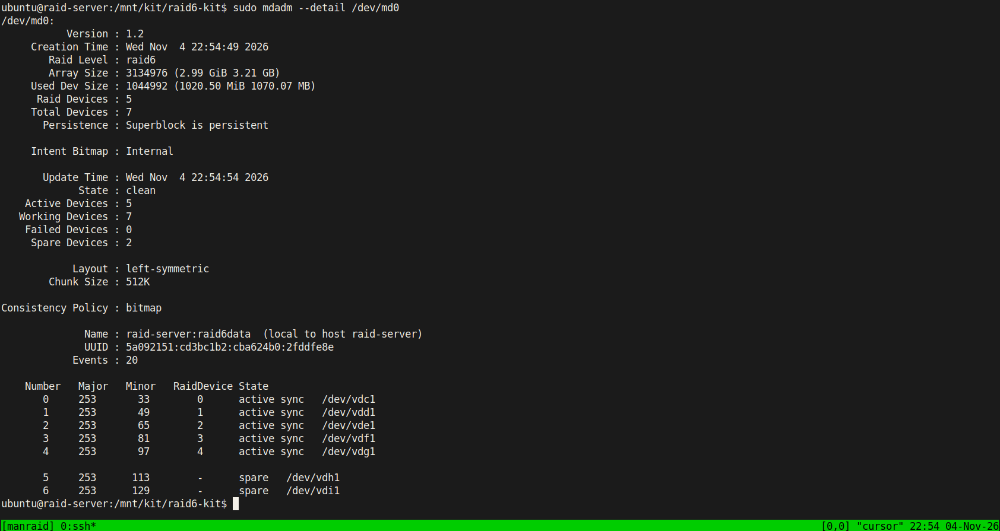
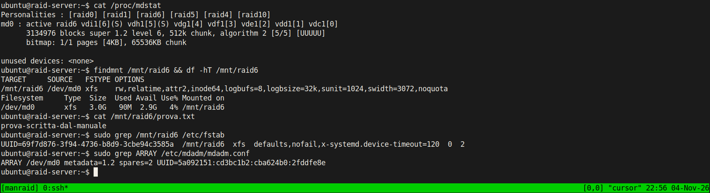

Il caso previsto è 7 dischi da circa 7 TB, RAID6, 5 attivi + 2 hot spare. Capacità utile circa 21 TB. Con almeno 7 dischi visibili, Invio alle prime domande produce proprio quello: mount /mnt/raid6, nome raid6data, filesystem xfs.
Lo stesso script crea anche RAID0, RAID1, RAID4, RAID5 e RAID10. linear solo se il kernel ha il modulo: sul kernel 6.8 di Ubuntu 24.04 non c'è, è stato tolto e torna dal 6.12. multipath e faulty non sono nel menu: il primo non è un RAID di dischi diversi, il secondo serve solo a simulare guasti.
Comandi da copiare
Ogni pulsante copia il testo con a capo Unix, senza spazi non separabili e senza virgolette curve. Si può incollare da Windows su Linux.
Sulla chiavetta
cp -a raid6-kit docs /media/$USER/CHIAVETTA/
Serve tutta la cartella docs, non solo questo file: gli screenshot stanno in docs/img.
Sul server, senza rete
sudo mkdir -p /opt sudo cp -a /media/$USER/CHIAVETTA/raid6-kit /opt/raid6-kit cd /opt/raid6-kit
dpkg --print-architecture . /etc/os-release && echo "$VERSION_CODENAME $VERSION_ID"
Deve rispondere amd64 e noble 24.04. Se l'architettura non è amd64 lo script esce subito. Se l'Ubuntu non è 24.04 chiede un YES in più prima di continuare.
lsblk -o NAME,SIZE,TYPE,FSTYPE,MOUNTPOINT,MODEL
Prima il piano, poi la creazione
sudo RAID6_PLAN_ONLY=1 bash scripts/setup-raid6.sh
Elenca i .deb che installerebbe e esce. Non partiziona nulla. sudo sul server chiede la password: nella prova sotto era già autorizzato, quindi il prompt della password non compare.
sudo bash scripts/setup-raid6.sh
La sessione, passo per passo
vdb etichettato RAIDKIT montato su /mnt/kit. I sette dischi dati sono vdc–vdi da 1 GB, per questo compare l'avviso «più piccolo di 1 TB». Sul server il kit è la chiavetta e i dischi sono quelli da circa 7 TB: quell'avviso non deve comparire. Se compare, hai incluso un disco sbagliato.
1. I dischi e il piano
Lo script non è ancora partito. lsblk mostra il disco di root (vda, montato su /), il kit (vdb, montato) e sette dischi senza filesystem. Poi RAID6_PLAN_ONLY=1 legge i .deb in packages/, guarda cosa è già installato e stampa solo il mancante. Qui manca mdadm 4.3-1ubuntu2.1. Nessun disco viene aperto in scrittura: il piano esce prima di need_root sulle partizioni.

2. Installa il pacchetto, poi chiede il livello
Senza RAID6_PLAN_ONLY lo script installa quel .deb con dpkg. Non aggiorna il resto del sistema. Non tocca libc6, systemd e udev se la versione già presente basta; se non basta, esce prima di scrivere sui dischi. Le domande di debconf di mdadm restano sui default (controllo mensile acceso, mail a root). I file di configurazione già presenti si tengono (--force-confdef --force-confold).
Nella schermata si vede il pacchetto locale spacchettato (mdadm_4.3-1ubuntu2.1_amd64.deb) e update-initramfs che rigenera l'initrd. La riga su os-prober arriva da grub durante quel trigger: non è un errore dello script. La riga che conta è OK mdadm pronto.
Poi elenca solo i dischi interi il cui nome è sd*, vd*, nvme*n*, mmcblk* e simili. Salta il disco di root, qualunque disco con qualcosa di montato, e lo swap. Il kit montato non c'è. I sette dischi diventano i numeri 1–7.
Il menu è la lista dei livelli che mdadm sa creare su dischi dati. Invio vale 6. In questa prova è stato premuto Invio: la riga successiva dice «Livello scelto: RAID6» e chiede quanti dischi attivi. Il default tra parentesi è 5, perché i dischi visibili sono almeno 7 e il livello è 6. Il minimo di RAID6 è 4: un numero più basso viene rifiutato e la domanda si ripete.

linear è stampato come non disponibile: modprobe linear è fallito. Il kernel 6.8 non ha md-linear. Scrivere linear fa ripetere il menu e non tocca i dischi. Su un kernel 6.12 o successivo la voce torna selezionabile.
3. Quanti dischi, e quali
Anche la seconda domanda ha preso Invio, quindi 2 spare. È il default solo per RAID6 con almeno 7 dischi. Su RAID1, 4, 5 e 10 il default degli spare è 0. RAID0 e linear non fanno questa domanda: uno spare non ricostruisce un disco senza parità o senza mirror.
La riga degli spare è un numero solo. 1 2 3 qui verrebbe rifiutata («Un solo numero, senza spazi»): i numeri dei dischi arrivano dopo. Lo script ristampa l'elenco e chiede esattamente 5 indici, separati da spazio.

4. Spare, mount e nome
Gli attivi sono 1 2 3 4 5 (vdc–vdg). Gli spare sono 6 7 (vdh, vdi). Un numero doppio, un indice inesistente o uno spare uguale a un attivo fa ripetere la domanda. Poi chiede il mount, default /mnt/raid6. Rifiuta /, un percorso con doppio slash, e le directory di sistema (/boot, /etc, /usr, /home e le altre). Il nome, default raid6data, accetta lettere, numeri, punto, trattino e underscore, al massimo 32 caratteri.

5. Il riepilogo, prima del YES
Prima di scrivere qualsiasi cosa sui dischi, lo script ristampa il comando che sta per eseguire, in forma leggibile. Device /dev/md0 (si cambia solo con la variabile MD_DEVICE). Chunk 512 KiB (si cambia solo con CHUNK_KIB, tra 4 e 65536). Bitmap interna. Metadata 1.2. I sette dischi con la dimensione. Il mount.
Poi gli avvisi. Sotto 1 TB avvisa, non blocca: nella prova i dischi sono da 1 GB, quindi l'avviso c'è sette volte. Con dischi da 7 TB non c'è. Se sul server lo vedi, fermati e controlla di non avere la chiavetta nella lista.
L'ultima riga è l'unica conferma. Finché non si scrive YES in maiuscolo, i dischi restano come sono.

6. Dopo il YES: partizioni, array, filesystem
A YES lo script, per ogni disco scelto, ferma l'array che lo tiene (se c'è), cancella firme e superblocco, e solo dopo scrive la GPT. Azzerare il disco a partizione già creata distruggerebbe la tabella e il device della partizione sparirebbe: per questo l'azzeramento è una volta sola, prima di sgdisk. La partizione è una sola, parte a 1 MiB, arriva in fondo, tipo FD00 (Linux RAID). Lo script aspetta che compaia /dev/vdc1 (oppure p1 su nvme e loop) e poi cancella le firme sulla partizione, così mdadm non si ferma su un superblocco vecchio.
Il create è questo, anche se nella schermata si vede il risultato e non la riga del comando:
mdadm --create /dev/md0 --name=raid6data --level=6 --raid-devices=5 --metadata=1.2 --run --chunk=512 --bitmap=internal --spare-devices=2 /dev/vdc1 /dev/vdd1 /dev/vde1 /dev/vdf1 /dev/vdg1 /dev/vdh1 /dev/vdi1
--run c'è perché il YES l'hai già dato: mdadm 4.3 non ha --yes, e una seconda domanda si mangerebbe la risposta del filesystem. Non usa --force.
Subito dopo stampa /proc/mdstat e mdadm --detail, poi chiede il filesystem. Invio vale xfs. L'allineamento per RAID6 è su=512k (il chunk) e sw=3: cinque dischi meno due di parità. In blocchi da 4 KiB, sunit=128 e swidth=384. La riga «log stripe unit is too large» è xfs che riduce solo lo stripe del journal interno; i dati restano allineati. Se l'mkfs allineato fallisse, lo script riprova senza quelle opzioni.
Monta su /mnt/raid6. Riscrive /etc/mdadm/mdadm.conf tenendo gli altri array e sostituendo la riga di questo UUID. Aggiunge a /etc/fstab la riga con l'UUID, defaults,nofail,x-systemd.device-timeout=120 e ordine 0 2. Poi update-initramfs -u, così al boot l'array si riassembla. FATTO arriva solo dopo.

7. Il dettaglio, a sync quasi finita
Raid level raid6, 5 dischi nell'array, 7 in totale, 2 spare, stato clean, bitmap interna, chunk 512K, layout left-symmetric. vdc1–vdg1 sono active sync. vdh1 e vdi1 sono spare, non hanno uno slot dati.

8. Montato, scrivibile, e si riavvia da solo
/proc/mdstat mostra [5/5] [UUUUU] e i due spare fra parentesi (S). findmnt e df vedono un XFS da 3,8 GB: è la capacità di un RAID6 su cinque dischi da 1 GB, cioè tre dischi di dati. Il file prova-scritta-dal-manuale è stato scritto sul mount. La riga di fstab ha nofail e un timeout di 120 secondi, così un disco lento al boot non blocca il server. mdadm.conf registra l'UUID e spares=2.

In una prova precedente, con lo stesso script, la macchina è stata riavviata: /mnt/raid6 è tornato montato da solo e l'hash di un file da 8 MB scritto prima del reboot coincideva. Non serve un comando manuale dopo il boot, se fstab e mdadm.conf sono quelli che ha scritto lo script.
Come lo fa, in ordine
- Controlla
amd64. Se l'Ubuntu non è noble o 24.04, chiede conferma. InRAID6_PLAN_ONLYquella conferma non c'è: il piano non deve fermarsi su una domanda. - Costruisce l'insieme dei pacchetti a partire da mdadm, parted, gdisk, xfsprogs, e2fsprogs, finalrd e kmod. Segue Depends e Pre-Depends. Se un'alternativa è già installata e soddisfa la versione, non installa l'altra. Installa solo ciò che manca. Aggiorna un pacchetto non protetto solo se la versione installata non soddisfa una dipendenza e il
.debdel kit è più nuovo e la soddisfa. I protetti sono libc6, libudev1, udev, systemd, systemd-dev, libsystemd0, libsystemd-shared, dpkg, tar, gcc-14-base, libgcc-s1, libstdc++6. Se uno di questi è troppo vecchio, esce prima dei dischi. - Chiede livello, eventuali spare, indici, mount, nome. Il profilo del livello decide chunk, bitmap e spare. RAID6 con almeno 7 dischi propone 5 e 2. Il chunk non si chiede.
- Al YES, per ogni disco: ferma chi lo tiene,
wipefs,mdadm --zero-superblocksul disco intero, GPT, partizioneFD00da 1 MiB, attesa del device,wipefssulla partizione. Se la partizione non compare, esce. Non continua con un disco occupato. mdadm --createcon metadata 1.2 e--run. Chunk 512 KiB su 0, 4, 5, 6 e 10. Niente chunk su RAID1 e linear. Bitmap interna su 1, 4, 5, 6 e 10. Niente bitmap su RAID0 e linear. Niente spare su RAID0 e linear. RAID10 aggiunge--layout.- XFS o ext4. Lo stripe di XFS è
suuguale al chunk eswuguale al numero di dischi dati: tutti i dischi su RAID0, n−1 su RAID4 e RAID5, n−2 su RAID6, e su RAID10 i dischi divisi per il numero di copie se la divisione è intera. ext4 usastrideestripe_widthcon la stessa aritmetica. RAID1 e linear non hanno stripe: mkfs normale. - Mount,
mdadm.conf, fstab con UUID,update-initramfs -use il comando c'è. Se l'initramfs fallisce, avvisa: l'array è già montato, al reboot va controllato/proc/mdstat.
Livelli
| Livello | Minimo | Spare | Se un disco muore |
|---|---|---|---|
| linear | 2 | no | Si perdono i dati di quel disco, e spesso anche il resto. Sul kernel 6.8 non si può creare. |
| RAID0 | 2 | no | Tutto l'array è perso. |
| RAID1 | 2 | sì | Regge fino a restare una copia. |
| RAID4 | 3 | sì | Regge un disco. La parità sta su un disco solo, che diventa il collo di bottiglia. Lo script lo dice prima del YES. |
| RAID5 | 3 | sì | Regge un disco. La parità è distribuita. |
| RAID6 | 4 | sì | Regge due dischi. È il default del kit. |
| RAID10 | 2 | sì | Dipende dal layout. Dopo il livello chiede n2 (default), f2 o o2. n3 e simili solo se i dischi bastano. |
RAID0 e linear non sopravvivono al guasto di un disco. Lo script lo scrive nel riepilogo, prima del YES.
La sync iniziale di un RAID5 o RAID6 da 7 TB può durare giorni. Il filesystem è usabile subito, più lento finché /proc/mdstat non arriva in fondo. Sui dischi da 1 GB della prova la sync è finita in pochi secondi: non usare quel tempo come previsione.
Dopo, e se lo rilanci
cat /proc/mdstat sudo mdadm --detail /dev/md0 findmnt /mnt/raid6 df -hT /mnt/raid6
I dischi di un array ancora montato non compaiono nella lista. Per rifarlo sugli stessi dischi:
sudo umount /mnt/raid6 sudo mdadm --stop /dev/md0 sudo bash scripts/setup-raid6.sh
Se /dev/md0 esiste ancora, lo script chiede un secondo YES prima di fermarlo. Se un disco è agganciato a un altro array, per esempio md127 riassemblato da solo al boot, lo ferma dopo il YES di distruzione, solo per i dischi che hai scelto.
Se al boot il mount non c'è:
sudo mdadm --assemble --scan sudo mount -a
Cosa non fa
- Non scarica pacchetti e non aggiorna il sistema.
- Non crea multipath né faulty.
- Non chiede una seconda conferma a mdadm: il YES del riepilogo è l'unica.
- Non offre linear sul kernel 6.8. Non lo sostituisce di nascosto con un altro livello.
- Non continua se
wipefsnon pulisce il disco. Esce, e i dischi già passati in quel giro possono essere già stati azzerati: non rilanciarlo alla cieca su altri dischi. Leggi le ultime righe, poilsblkecat /proc/mdstat.